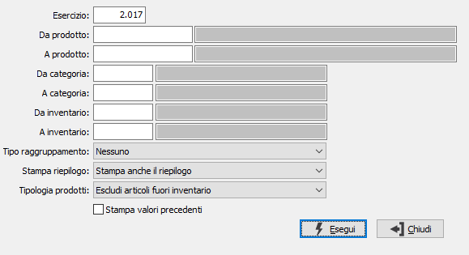

Stampa valorizzazione FIFO
Il programma esegue la stampa delle valorizzazioni FIFO, sia in modalità simulata che definitiva.
Per ciascun articolo possono essere stampate le esistenze a quantità e valore dei vari anni e la relativa totalizzazione.

ESERCIZIO: valore obbligatorio proposto automaticamente dal programma.
DA PRODOTTO: eventuale codice dell'articolo, presente in anagrafica Prodotti, da cui si desidera iniziare la selezione. Confermando a vuoto, la selezione inizia con il primo prodotto valido. Sul campo è attiva la ricerca (F9) sull’anagrafica prodotti.
A PRODOTTO: eventuale codice dell'articolo, presente in anagrafica Prodotti, a cui si desidera terminare la selezione. Confermando a vuoto, la selezione termina con l’ultimo valido. Sul campo è attiva la ricerca (F9) sull’anagrafica prodotti.
DA CATEGORIA: eventuale codice della categoria merceologica da cui si vuole iniziare la selezione. Sul campo è attiva la ricerca (F9) sulla tabella Categorie merceologiche.
A CATEGORIA: eventuale codice della categoria merceologica con cui si vuole concludere la selezione. Sul campo è attiva la ricerca (F9) sulla tabella Categorie merceologiche.
DA COD. INVENTARIO: eventuale codice Inventario da cui si vuole iniziare la selezione. Sul campo è attiva la ricerca (F9) sulla tabella Codici inventario.
A COD. INVENTARIO: eventuale codice Inventario con cui vi vuole concludere la selezione. Sul campo è attiva la ricerca (F9) sulla tabella Codici inventario.
TIPO RAGGRUPPAMENTO: combo box per definire un eventuale criterio di raggruppamento degli articoli. Valori ammessi: Nessuno; per codice inventario; per Categoria merceologica.
STAMPA RIEPILOGO: combo box per definire i criteri di trattamento dei riepiloghi. Valori ammessi: Non stampa riepilogo; Stampa anche il riepilogo; Stampa solo il riepilogo.
TIPOLOGIA PRODOTTI: combo box per definire la tipologia dei prodotti da elaborare. Valori ammessi: tutti, escluso prodotti fuori inventario, solo prodotti fuori inventario.
STAMPA VALORI PRECEDENTI: check box per attivare o meno la stampa dei valori di ciascun esercizio precedente. Valori ammessi: vuoto = stampa solo totale per articolo; spunta = stampa dettaglio anni precedenti.